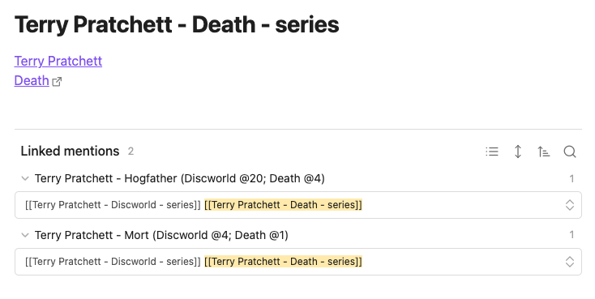

Goodreads export to markdown files
Transform your Goodreads book reviews into structured markdown files, ideal for use in Obsidian and other markdown-based applications.
- Goodreads Book Page Links: Each markdown file contains a direct link to the corresponding book's page on Goodreads.
- Calibre Integration: Includes a Search in Calibre URL for each book, allowing quick searches in your local Calibre collection.
- Tagging Based on Goodreads Shelves: Reviews are automatically categorized with tags derived from your Goodreads shelves.
- Customizable Templates: Utilizing Jinja2 templates, the output format can be easily customized to suit your specific needs or preferences.
Example of book review in Obsidian

Example of book author in Obsidian

Example of book series in Obsidian

Installation
Install using pipx for isolated environments, which prevents interference
with your system's Python packages:
brew install pipx
pipx ensurepath
python3 -m pip install --user pipx
python3 -m pipx ensurepath
# If you installed python using the app-store, replace `python` with `python3` in the next line.
python -m pip install --user pipx
Final Step: Once pipx is set up, install goodreads-export:
pipx install goodreads-export
How to Create a Goodreads Export File
This application utilizes a CSV file generated from goodreads.com. To create your Goodreads export, follow the instructions at Goodreads Book Export.
Despite announcements in 2022 about the removal of this feature by August 2020, the export function was still operational as of late 2025.
Initially, I developed this application as a one-off solution to migrate my 700+ book reviews away from Goodreads. However, since the export feature remains functional, I now use it to incrementally update my markdown files in Obsidian.
Why Use a Manually Exported File?
As of 2020, Goodreads discontinued issuing new API keys. Consequently, my approach is about adapting to these limitations.
While I can't fully automate the process due to the API restriction, I can still retrieve my data from Goodreads, albeit with the additional step of manual export.
Incremental Updates, Merge Authors
The application supports adding reviews to a folder with existing files. It reads the existing files and avoids creating duplicates by using the Goodreads book IDs embedded in the markdown file links to Goodreads pages.
Important: To maintain the integrity of the data, do not remove or modify these Goodreads links. The application uses these links, not the file names, to identify the books.
Author Files
The links within the files serve as author IDs and should not be altered. The author's name is sourced from the link within each file, rather than from the file's name.
Merging Different Author Names
Goodreads may have various spellings or language versions of an author's name. This application allows for merging these into a single 'primary' author file.
- Consolidate all author names by copying their links into one primary author file.
- Ensure the first link in this file is the 'primary' name of the author.
- To merge author names without importing new data from Goodreads, use the
--mergeoption. This will only perform the merging of author names, eliminating the necessity to specify a Goodreads export file.
Command Line Interface
goodreads-export --help

goodreads-export import --help

If the script is executed in a directory containing the Goodreads export file (goodreads_library_export.csv)
without any parameters, as follows:
goodreads-export import .
This command will generate subfolders within the current directory: reviews, toread, and authors,
each populated with corresponding markdown files.
Alternatively, instead of . you can specify a path to a folder within your Obsidian vault where your books are organized,
and the application will update that location.
Templates
This application utilizes Jinja templates, which are fully customizable.
Creating and Updating Templates
To begin customizing templates, use the configure command to create templates in the application's config directory:
goodreads-export configure
This command creates templates in the default application config directory (platform-specific location). You can then modify these templates as needed.
To specify a custom config directory, use the --config or -c option:
goodreads-export configure --config /path/to/config
Template Files
The templates include:
author.jinjafor generating author files.book.jinjafor creating book files.series.jinjafor series files.regex.tomlcontains specified regexes to extract data from these files.
Updating Templates Safely
The configure command intelligently handles template updates:
- Unmodified templates: Automatically updated when new versions are available.
- Modified templates: New versions are saved as
.latestfiles (e.g.,book.jinja.latest) without overwriting your customizations. - Force updates: Use
--forceor-fto replace all templates, including modified ones.
When you run configure without specifying a built-in template set, it uses the same set that was used when templates were initially created.
To switch to a different built-in template set, use --force along with --builtin-name.
Using Custom Templates
When running import, check, or merge commands, you can specify your custom config folder using the --config or -c option:
goodreads-export import . --config /path/to/config
If not specified, the application will look for templates in the default config folder or use built-in templates if the templates were not copied with configure command.